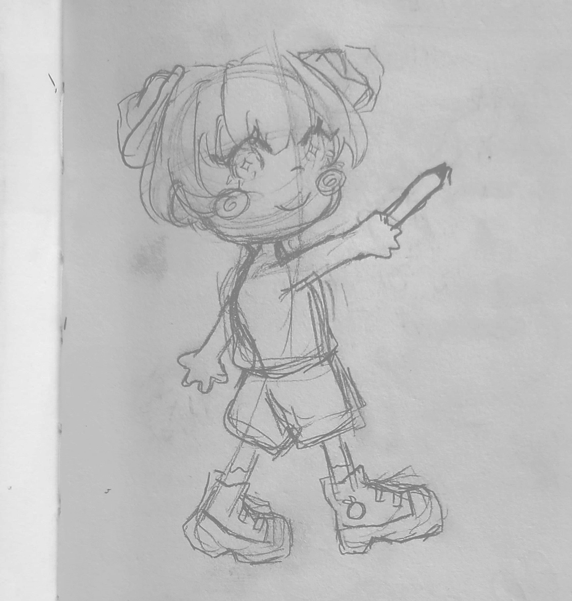
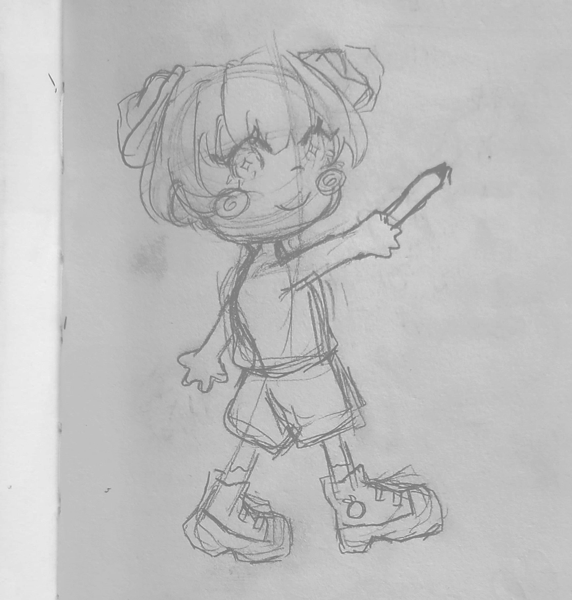
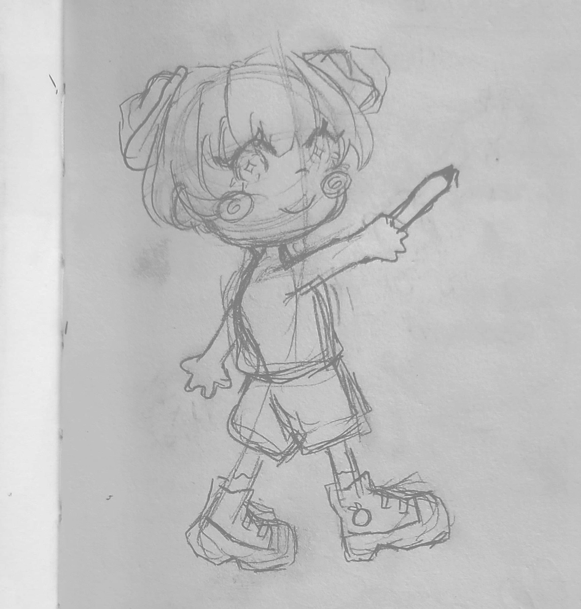

.png) 


Tools:
Clip Studio Paint
Project:
Character Design,
Illustration, Brand Design
Prompt:
Design and create
strategic branding to
increase artistic reach
Lacked consistency and a marketing strategy as an artist and wanted to create own brand identity.
Design and created logos and mascot to stand out from other artists and increase engagement.

I wanted my branding to show parts of my authentic self so customers and clients can see who I am both as a person and an artist. I built a color pallete around the color blue, as it is a color I associate with myself often. The fonts I created are of my own handwritting.
When designing my macot, I also wanted to represent myself as well at the type of art that I want to create. I enjoy drawing cute illustrations, so I drew my mascot stylized and cartoony to represent that. I gave her slightly exaggerated features to give off a silly and fun vibe, trying to convey that my art is created with the intent of being bright and for everyone.

My mascot didn't change much from the first iteration to what she is now. Initially, she was designed with more influence from clowns. She was quickly designed for a thank you sticker for an art event and I went back and redesigned her, giving her a full body character sheet. I decided to remove the face makeup to make it simpler and not so cluttered.